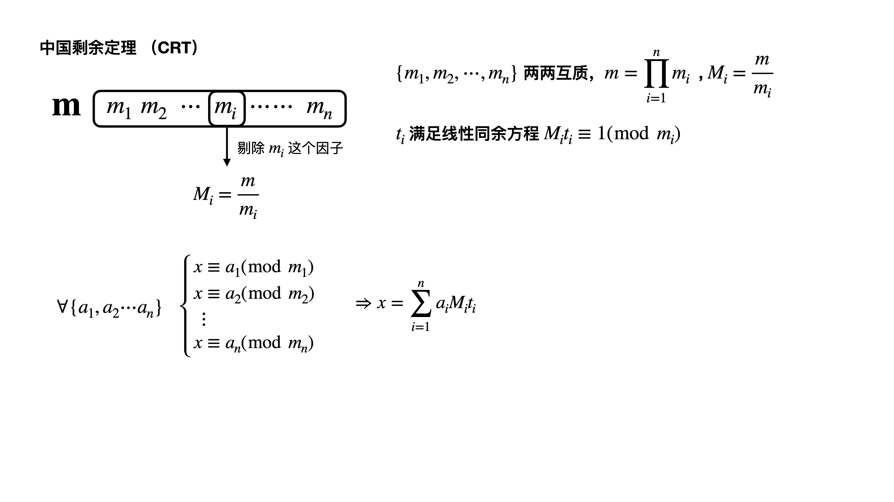

这部分内容介绍了同余方程，类Euclid算法等内容
线性同余方程
对于线性同于方程ax≡c(modb)
定理1，方程ax+by=c 等价于方程ax≡c(modb)
有整数解的充要条件是gcd(a,b)∣c
algorithm
用扩展Euclid算法求解出一组x0,y0，满足ax0+by0=gcd(a,b)
两边同时除以gcd(a,b)，再×c
acx0/gcd(a,b)+bcy0/gcd(a,b)=c
gcd(a,b)cx0,gcd(a,b)cy0
定理2， 若gcd(a,b)=1，并且x0,y0 是方程
ax+by=c 的一组解，那么方程的任意解可以表示为
∀t∈Z,x=x0+bt,y=y0−at
因为此时t 为任意整数都可以成立，这个时候我们可以求出方程的所有解
但实际问题中，我们只需要求解一个最小整数解就可以了
实际上，根据定理1，我们可以把一般解式表示为
x=gcd(a,b)cx0+k⋅gcd(a,b)by=gcd(a,b)cy0−k⋅gcd(a,b)a∀k∈Z
注意到k 可以取任意整数
方程的通解实际上是
modgcd(a,b)b≡x≡gcd(a,b)cx0
就是一类同余数，modgcd(a,b)b余数是
gcd(a,b)cx0
最小的数，一般取k=1，此时对一个特解x
t=gcd(a,b)b,x=(xmodt+t)modt
LOJ2605 同余方程
1
2
3
4
5
6
7
8
9
10
11
12
13
14
15
16
17
18
19
20
21
22
| ll a, b;
ll exgcd(ll a, ll b, ll &x, ll &y) {
if (b == 0) {
x = 1, y = 0;
return a;
}
ll d = exgcd(b, a%b, x, y);
ll z = x; x = y; y = z - (a/b)*y;
return d;
}
int main() {
freopen("input.txt", "r", stdin);
cin >> a >> b;
ll x, y;
exgcd(a, b, x, y);
ll res = (x % b + b) % b;
cout << res << endl;
}
|
扩展Euclid算法求解线性同余方程
ax≡c(modb)
也就是ax+by=c 方程的解，要求求出一个最小的x
- algorithm
- d=exgcd(a,b,x,y)⇒get x
计算出一个特解x - cmodd=0，没有解
else k=c/d
x←(x⋅k)modb,y←(y⋅k)modb
1
2
3
4
5
6
7
8
9
10
11
12
13
14
15
16
17
18
19
| inline ll exgcd(ll a, ll b, ll &x, ll &y) {
if (!b) {
x = 1, y = 0;
return a;
}
ll d = exgcd(b, a%b, x, y);
ll z = x; x = y; y = z - (a/b) * y;
return d;
}
bool liEu(ll a, ll b, ll c, ll &x, ll &y) {
ll d = exgcd(a, b, x, y);
if (c % d) return 0;
int k = c/d;
x = (x * k) % b;
y = (y * k) % b;
return 1;
}
|
中国剩余定理

mi 不再两两互质情况下的中国剩余定理
POJ2891
假设解完前k 个线性同余方程之后得到的特解是x
m=lcm(m1,m2,⋯,mk)
通解可以表示成x+km(k∈Z)
最小非负整数解为xmodm
1
2
3
4
5
6
7
8
9
10
11
12
13
14
15
16
17
18
19
20
21
22
23
24
25
26
27
28
29
30
31
32
33
34
35
36
37
38
39
40
41
42
43
44
45
46
47
48
49
50
51
52
| typedef unsigned long long ull;
int n;
inline ll exgcd(ll a, ll b, ll &x, ll &y) {
if (!b) {
x = 1, y = 0;
return a;
}
ll d = exgcd(b, a%b, x, y);
ll z = x; x = y; y = z - (a/b) * y;
return d;
}
void solve(int n) {
ll a, r;
cin >> a >> r;
ll ans = r, lcm = a;
bool fl = true;
n--;
while (n--) {
cin >> a >> r;
// exgcd
r = (r - ans % a + a) % a;
ll x, y, x2;
ll d = exgcd(lcm, a, x, y);
if (r % d) fl = false;
else x2 = x * (r/d) % a;
ans += x2 * lcm;
// update lcm, and get min ans
lcm = (lcm / d) * a;
ans = (ans % lcm + lcm) % lcm;
}
if (fl) cout << ans << endl;
else cout << "-1" << endl;
}
void init() {
//
}
int main() {
freopen("input.txt", "r", stdin);
while (cin >> n) {
init();
solve(n);
}
}
|
CRT算法图解
高次同余方程
 微信
微信 支付宝
支付宝